01
Открой форму записи
Зайди в репозиторий enroll курса и перейди на вкладку Issues. Там нажми зелёную кнопку New issue.
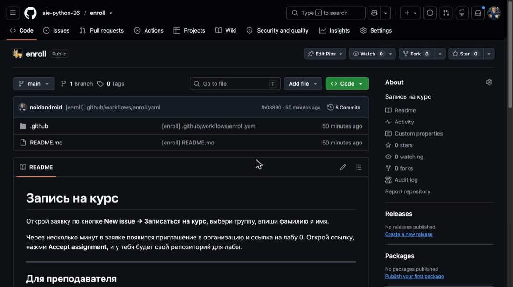
1- 1
Вкладка Issues в верхнем меню репозитория.
Инструкция со скриншотами
Весь путь курса по шагам: записаться, принять лабу, сдать её и отработать пару. Рамка на скриншоте показывает место клика, номер рядом — порядок.
Первые девять шагов делаются один раз, дома. Последние три повторяются каждую пару.
Зайди в репозиторий enroll курса и перейди на вкладку Issues. Там нажми зелёную кнопку New issue.

1Вкладка Issues в верхнем меню репозитория.
GitHub предложит список шаблонов. Нужен первый: он открывает короткую анкету, а не пустую заявку.
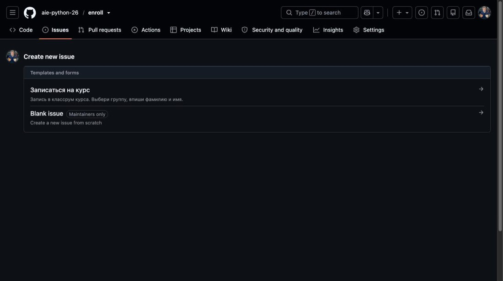
1Строка Записаться на курс — кликается вся, целиком.
Логин писать не надо, заявка и так уходит от твоего аккаунта. Группу выбирай из списка: по ней тебя потом поставят в пару с одногруппником.
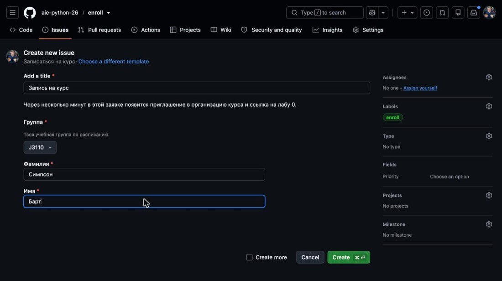
1234Твоя учебная группа по расписанию.
Фамилия.
Имя.
Кнопка Create внизу формы.
Через пару минут в заявке появится ответ. Если ты ещё не в организации курса, GitHub пришлёт приглашение на почту — прими его. Потом открой ссылку на лабу 0 из ответа.
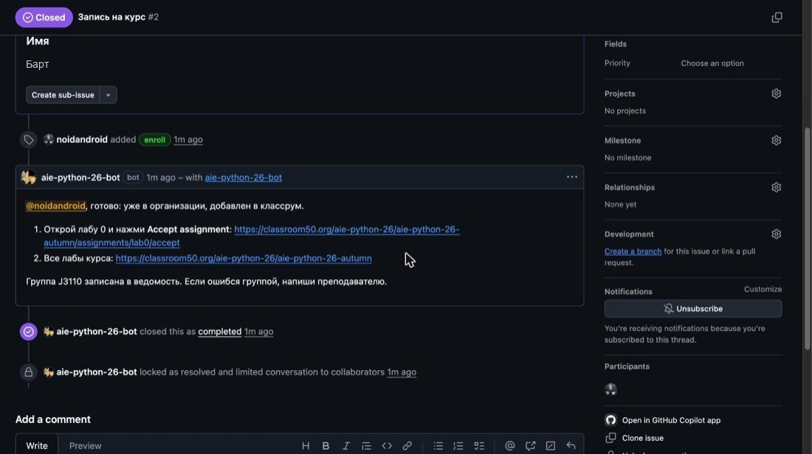
1Ссылка на приём лабы 0. Приглашение в организацию примется по ней же, если ты не успел раньше.
Ссылка ведёт на classroom50.org. Это витрина заданий поверх GitHub, отдельного пароля у неё нет.
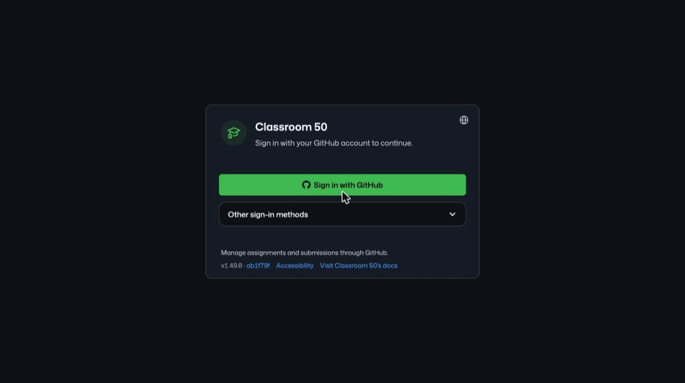
1Sign in with GitHub, дальше подтверди доступ в окне GitHub.
Проверь, что на странице твой логин и твоё имя будущего репозитория. Приём создаёт личную копию задания, чужую лабу ты не увидишь.
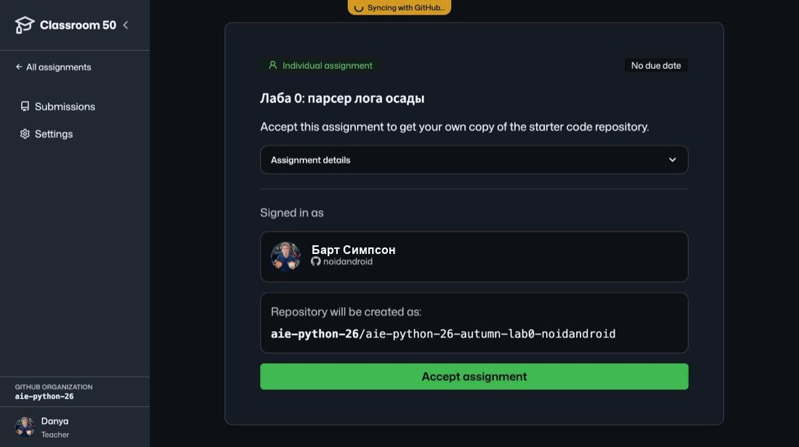
12Имя репозитория заканчивается твоим логином — это проверка, что ты вошёл под собой.
Кнопка Accept assignment.
Настройка занимает секунд двадцать. Когда появится галочка, переходи в репозиторий.
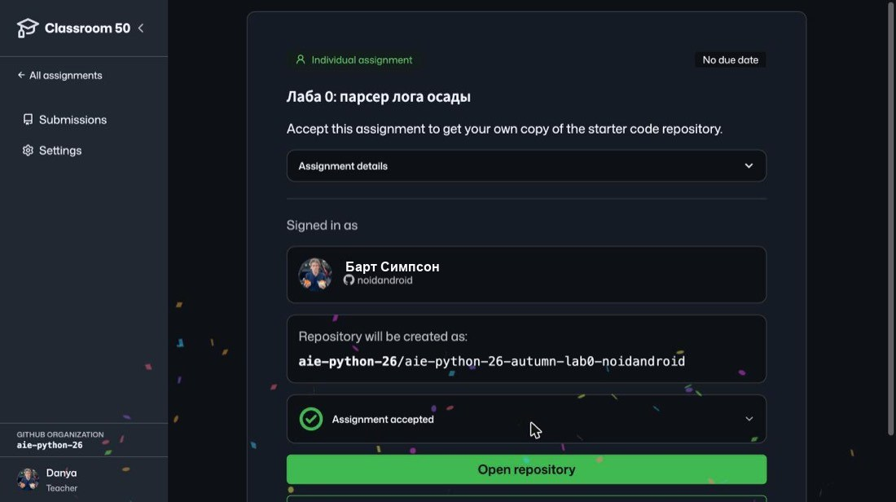
12Assignment accepted — всё готово.
Кнопка Open repository.
Код лабы живёт в siege.py, лог рядом — siege_log.txt. Клонируй репозиторий к себе, работай локально и пуш́ь в ветку main. Каждый push запускает автопроверку.
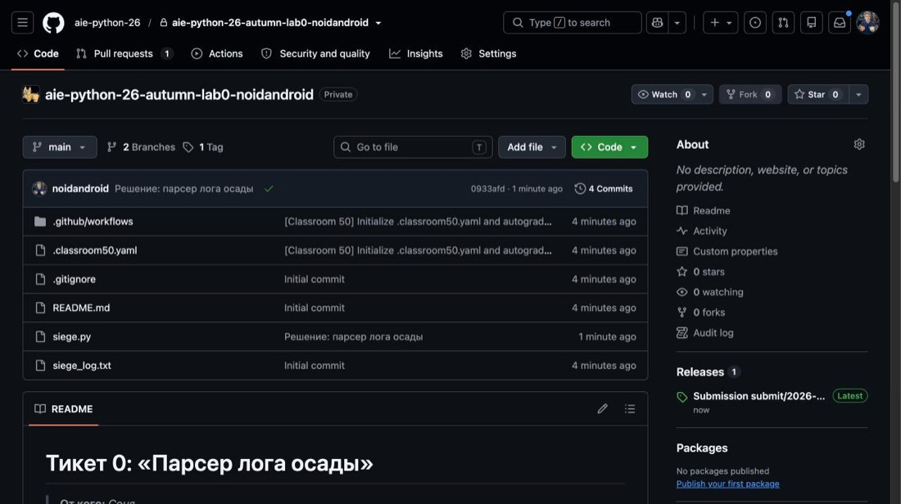
12Значок проверки у последнего коммита: галочка — тесты прошли, крестик — нет.
Файл, в котором ты пишешь решение.
Нажми на значок у коммита или открой раздел Releases. На каждую сдачу создаётся релиз с таблицей проверок.
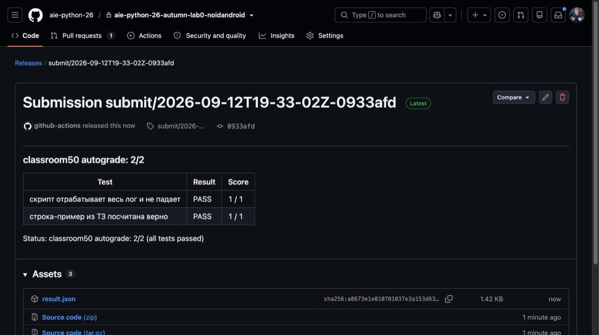
12Итог: сколько проверок из скольких прошло.
Какая именно проверка упала. Лаба 0 без баллов, но без неё следующие лабы не примут.
В начале пары преподаватель открывает заявку отметки и показывает ссылку. Кто не отметился, в пары не попадёт.
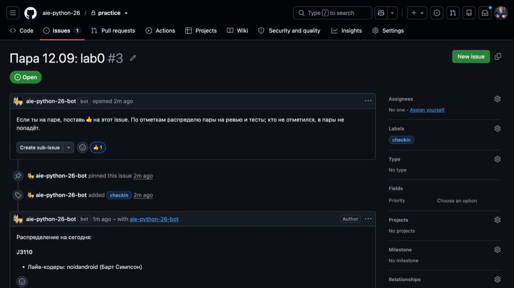
12Кнопка с рожицей добавляет реакцию, если её ещё нет.
Если 👍 уже стоит, просто нажми на счётчик — добавится твой.
Через минуту после распределения бот пишет состав прямо в этой заявке: кто лайв-кодер, кто с кем в паре на тесты и на ревью.
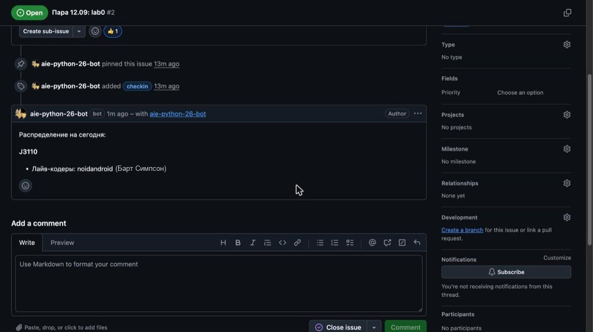
1Состав на сегодня. Доступ к репозиторию напарника выдаётся автоматически и только на время пары.
Открой Feedback pull request в репозитории напарника, вкладка Files changed. Наведи курсор на строку кода и нажми синий плюс слева — комментарий привяжется к строке. Ревью «всё ок» не принимается.
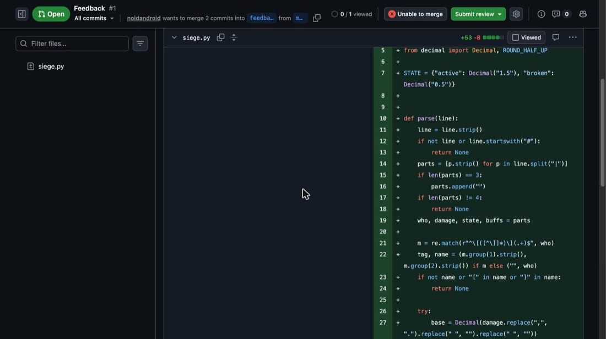
12Наведи курсор на строку, слева от номера появится синий плюс.
Submit review отправляет все комментарии разом.
needs-attention — бот не справился, напиши преподавателю. Лаба не принимается и пишет «Not a member yet» — приглашение в организацию ещё не принято, проверь почту, включая спам.Памятка преподавателяКак проводится пара с той стороны
Открыть →